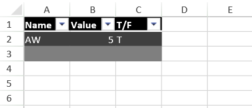
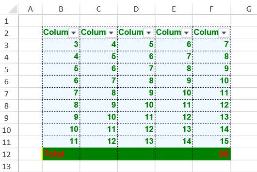
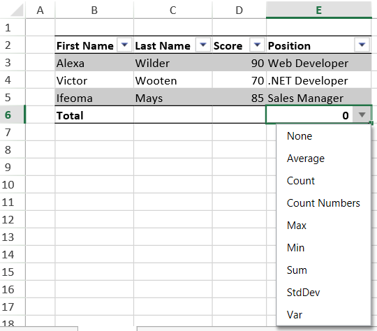

SpreadJS allows users to customize tables by configuring and applying different styles to the table while working with spreadsheets.
Some style properties apply to areas that are not visible or do not have a style setting by default. For example, the lastFooterCellStyle is not displayed unless showFooter is true.
The following table lists the Table method that must be true so that the associated table styles are displayed in the table.
Users can use a built-in style for the entire table or can also set styles for specific areas of the table such as rows or columns. You can refer to the TableThemes class for a list of built-in styles and the TableTheme class for styles that can be set for specific areas.
The following image shows a built-in style (with Dark Theme) applied to the table.

The following example code creates a table and sets the table style using a built-in style.
| JavaScript |
Copy Code
|
|---|---|
activeSheet.tables.add("Table1", 0, 0, 3, 3, GC.Spread.Sheets.Tables.TableThemes.dark1); activeSheet.getCell(0,0).text("Name"); activeSheet.getCell(0,1).text("Value"); activeSheet.getCell(0,2).text("T/F"); activeSheet.getCell(1,0).text("AW"); activeSheet.getCell(1,1).text("5"); activeSheet.getCell(1,2).text("T"); |
|
Users can configure a custom table footer style easily and quickly by defining a new table style and then setting different properties for the background color, foreground color, borders and fonts.
The following image depicts a custom style for table footer along with the table styling.

The following example code displays a spreadsheet with custom style applied to the table footer.
| JavaScript |
Copy Code
|
|---|---|
window.onload = function(){ var spread = new GC.Spread.Sheets.Workbook(document.getElementById("ss"),{sheetCount:3}); var activeSheet = spread.getActiveSheet(); // Add data for (var col = 1; col < 6; col++) { for (var row = 2; row < 11; row++) { activeSheet.setValue(row, col, row + col); } } var tableStyle = new GC.Spread.Sheets.Tables.TableTheme(); var thinBorder = new GC.Spread.Sheets.LineBorder("black", GC.Spread.Sheets.LineStyle.dotted); tableStyle.wholeTableStyle(new GC.Spread.Sheets.Tables.TableStyle("aliceblue", "green", "bold 10pt arial", thinBorder, thinBorder, thinBorder, thinBorder, thinBorder, thinBorder, GC.Spread.Sheets.TextDecorationType.none)); var tStyleInfo = new GC.Spread.Sheets.Tables.TableStyle(); tStyleInfo.backColor = "green"; tStyleInfo.foreColor = "red"; tStyleInfo.borderBottom = new GC.Spread.Sheets.LineBorder("green", GC.Spread.Sheets.LineStyle.thin); tStyleInfo.borderLeft = new GC.Spread.Sheets.LineBorder("yellow", GC.Spread.Sheets.LineStyle.medium); tStyleInfo.borderTop = new GC.Spread.Sheets.LineBorder("green", GC.Spread.Sheets.LineStyle.thin); tStyleInfo.borderRight = new GC.Spread.Sheets.LineBorder("green", GC.Spread.Sheets.LineStyle.thin); tStyleInfo.font = "bold 11pt arial"; tableStyle.footerRowStyle(tStyleInfo); var sTable = activeSheet.tables.add("Custom", 1, 1, 10, 5, tableStyle); sTable.showFooter(true); // Set footer value sTable.setColumnValue(0, "Total"); // Set footer formula sTable.setColumnFormula(4, "SUM(F3:F11)"); } <div id="ss" style="height: 500px; width: 800px"></div> |
|
Apart from setting table footer style, users can also display a dropdown list in the table footer using the useFooterDropDownList method. This method shows a complete dropdown list (with several options -"None", "Average", "Count", "Count Numbers", "Max", "Min", "Sum", "StdDev' and Var etc.) when the dropdown indicator in the footer cell is clicked, as depicted in the image shared below:

The following example code shows how to display a table footer dropdown list in the spreadsheet.
| JavaScript |
Copy Code
|
|---|---|
// Initializing Spread var spread = new GC.Spread.Sheets.Workbook(document.getElementById('ss'), { sheetCount: 1 }); // Get the activesheet var activeSheet = spread.getActiveSheet(); // Add Table var table = activeSheet.tables.add("table1", 1, 1, 4, 4, GC.Spread.Sheets.Tables.TableThemes.light1); // Enable table's footer using showFooter method table.showFooter(true); // Enable table's useFooterDropDownList to true table.useFooterDropDownList(true); activeSheet.getCell(1, 1).text("First Name"); activeSheet.getCell(1, 2).text("Last Name"); activeSheet.getCell(1, 3).text("Score"); activeSheet.getCell(1, 4).text("Position"); activeSheet.getCell(2, 1).text("Alexa"); activeSheet.getCell(2, 2).text("Wilder"); activeSheet.getCell(2, 3).text("90"); activeSheet.getCell(2, 4).text("Web Developer"); activeSheet.getCell(3, 1).text("Victor"); activeSheet.getCell(3, 2).text("Wooten"); activeSheet.getCell(3, 3).text("70"); activeSheet.getCell(3, 4).text(".NET Developer"); activeSheet.getCell(4, 1).text("Ifeoma"); activeSheet.getCell(4, 2).text("Mays"); activeSheet.getCell(4, 3).text("85"); activeSheet.getCell(4, 4).text("Sales Manager"); for (var i = 0; i < 3; i++) activeSheet.setColumnWidth(i, 90.0, GC.Spread.Sheets.SheetArea.viewport); activeSheet.setColumnWidth(4, 120); |
|